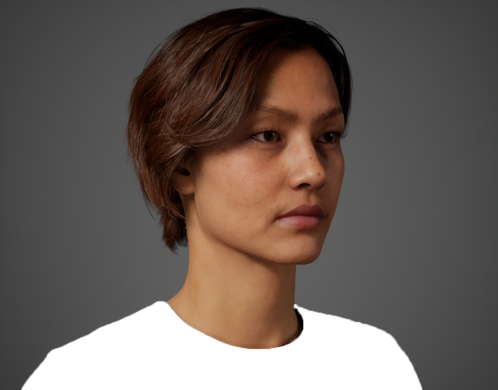
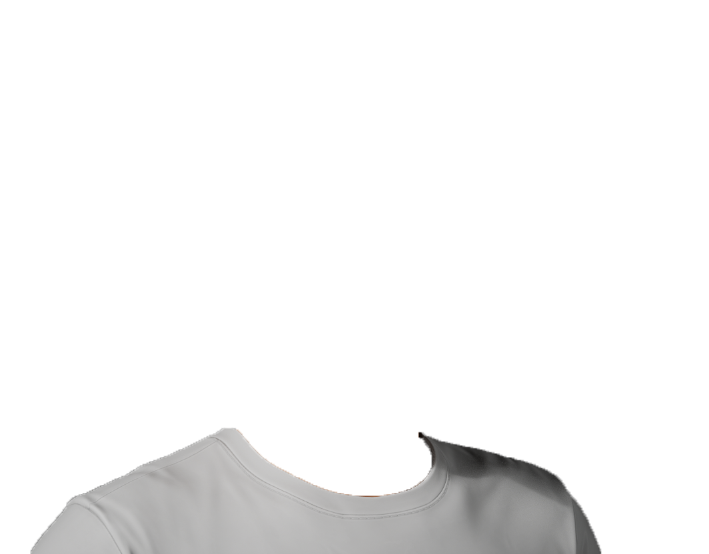
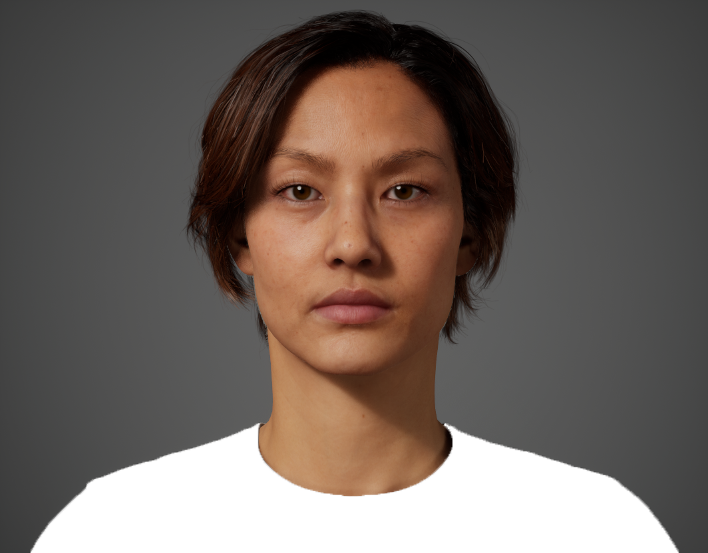
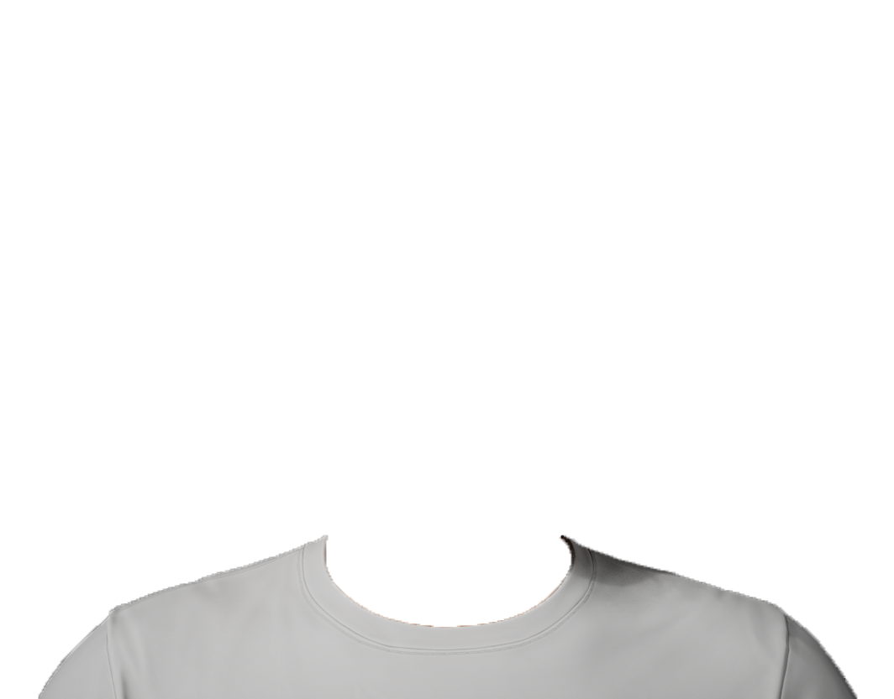
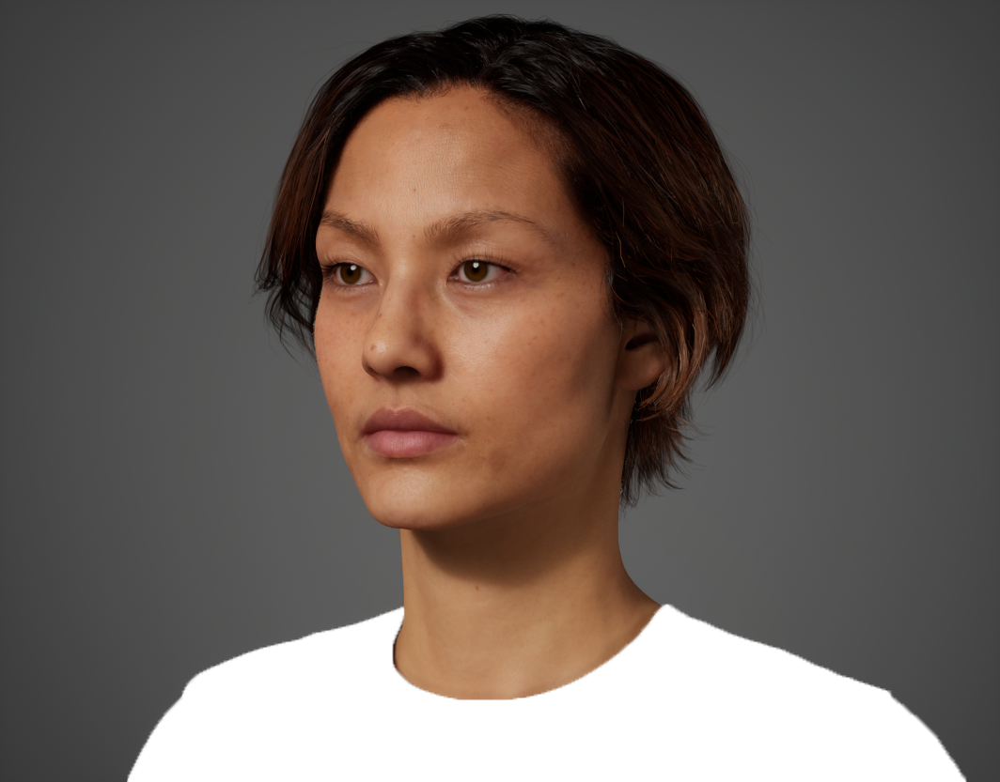
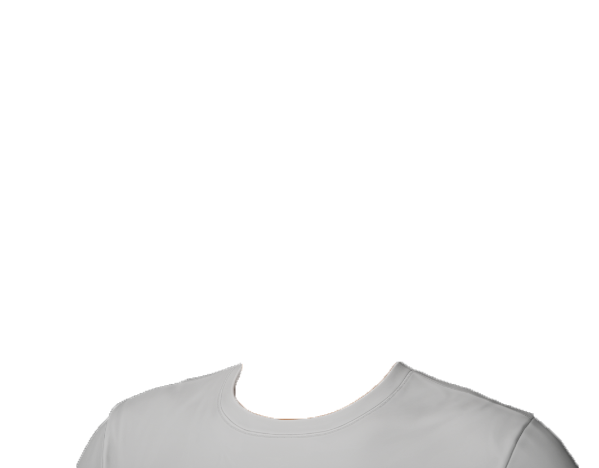

【開始前の確認事項：画面表示の固定】
明るさの固定:
画面の明るさを「100%（最大）」に設定し、終了するまで変更しないでください。
夜間モードの解除:
「Night Shift」「夜間モード」「True Tone」等の色温度自動変更機能は
オフ
にしてください。
照明の固定:
部屋の照明を消して、暗室で実施してください。
1. 実際の現在の部屋の照明環境：
完全な暗室（消灯）
実施不可_間接照明・薄暗い室内
実施不可_一般的な室内照明（蛍光灯・LED）
実施不可_昼間の自然光が入る環境
2. ブルーライトカット眼鏡や保護フィルムの使用：
使用していない（裸眼または通常の眼鏡/コンタクト）
実施不可_ブルーライトカット眼鏡を着用
実施不可_画面にブルーライトカットフィルムを貼っている
実施不可_画面に覗き見防止または保護フィルムを貼っている
上記の画面設定を確認・固定しました
開始する
Acceptable Color Range
Please adjust the sliders for each of the 6 base colors to find the most suitable color.
Right View


Front View


Left View


Base Color
基準アンカー色
Red
● Adjusting
● Pending
● Pending
● Pending
● Pending
● Pending
■ Bluish (Cool)
Yellowish (Warm) ■
■ Darker
Lighter ■
■ Muted（Low Chroma）
Vivid（High Chroma） ■
Please review and adjust all 6 colors before submitting.
Submit All 6 Color Results